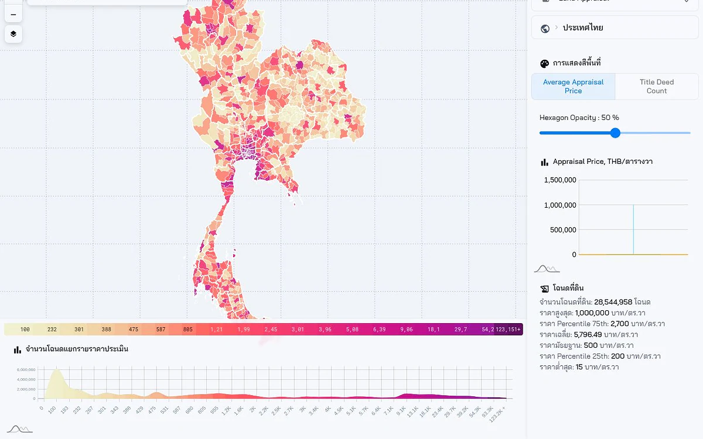
ราคาประเมิน · จำนวนโฉนดเจ้าของที่ดิน · ผู้พัฒนา · นักลงทุน
ควรซื้อ ถือ หรือพัฒนาพื้นที่ไหน
เทียบอาคาร ราคา และบริบทรอบพื้นที่ เพื่อเลือกทำเลที่อยากศึกษาให้ลึกขึ้น
ข้อมูลพื้นที่สำหรับการตัดสินใจจริง
มองที่ดิน เห็นตลาด เข้าใจผู้คนผ่านแผนที่ เลือกข้อมูลที่ตรงกับคำถาม แล้วเปิดดูพื้นที่ที่สนใจได้ทันที
Measure What Matters. Make It Actionable.
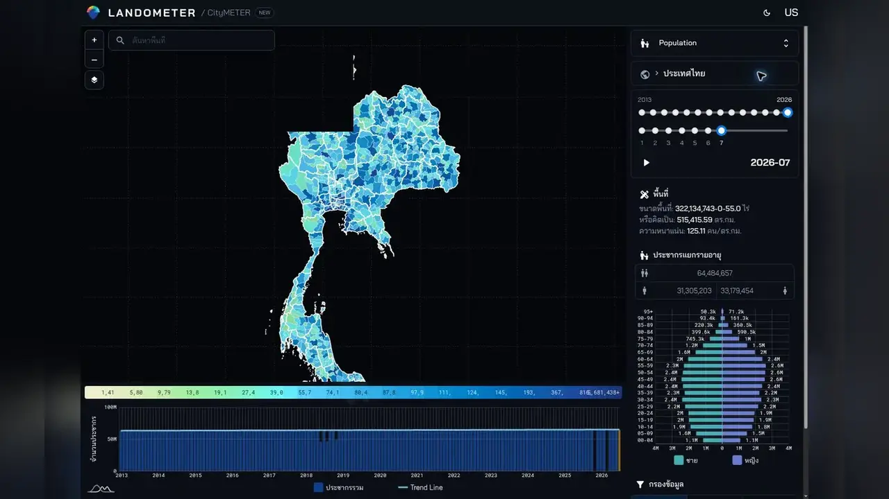
ตัวอย่างจากหน้าจอ CityMETER จริงวิดีโอตัวอย่างไม่มีเสียง
เริ่มจากสิ่งที่ต้องตัดสินใจ
เลือกโจทย์ แล้วดูตัวอย่างและข้อมูลที่เกี่ยวข้องโดยไม่ต้องจำชื่อชุดข้อมูล

ราคาประเมิน · จำนวนโฉนดเจ้าของที่ดิน · ผู้พัฒนา · นักลงทุน
เทียบอาคาร ราคา และบริบทรอบพื้นที่ เพื่อเลือกทำเลที่อยากศึกษาให้ลึกขึ้น
ลองดูภาพจากข้อมูล
อ่านตัวอย่างจากพื้นที่จริง แล้วเปิดแผนที่เพื่อดูคำตอบที่เกี่ยวกับคุณ
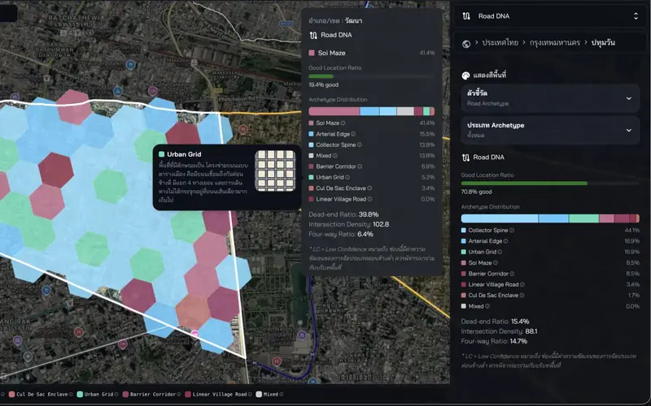
เปลี่ยนข้อมูลเส้นถนนบนแผนที่ ให้เป็นโปรไฟล์โครงสร้างของพื้นที่ ที่ช่วยให้เห็นรูปแบบการเชื่อมต่อของเมืองและประเมินศักยภาพทำเลได้ง่ายขึ้น
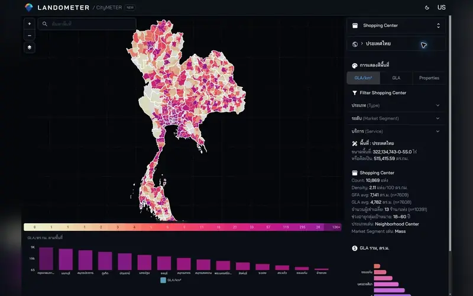
เห็นศูนย์การค้า ตลาด และพื้นที่ค้าปลีกในบริบททำเลเดียวกัน เพื่อวางกลยุทธ์ตลาดและเลือกสถานที่ศึกษาต่อ
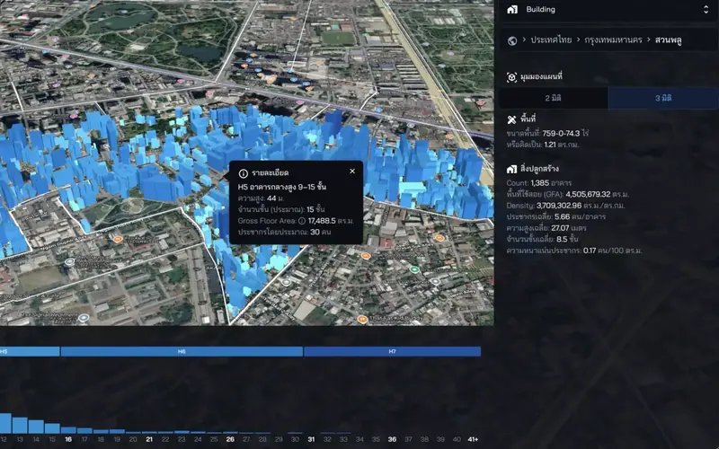
แปลงข้อมูลอาคารให้เป็นภาพเมืองสามมิติ เห็นความหนาแน่น ความสูง และค่าประมาณพื้นที่ใช้สอยรวม เพื่อเลือกพื้นที่ศึกษาต่อ
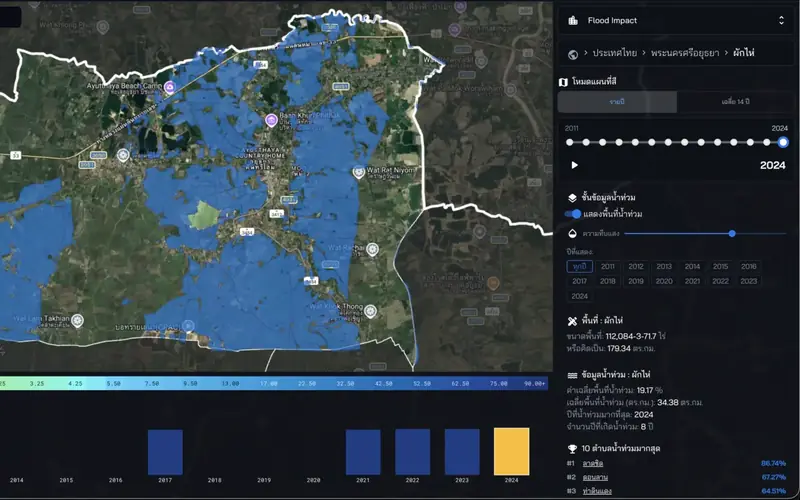
เปลี่ยนข้อมูลน้ำท่วมย้อนหลังให้เป็นแผนที่ เห็นพื้นที่ที่เคยตรวจพบน้ำท่วมและการเกิดซ้ำในแต่ละปี ก่อนศึกษาทำเลต่อ
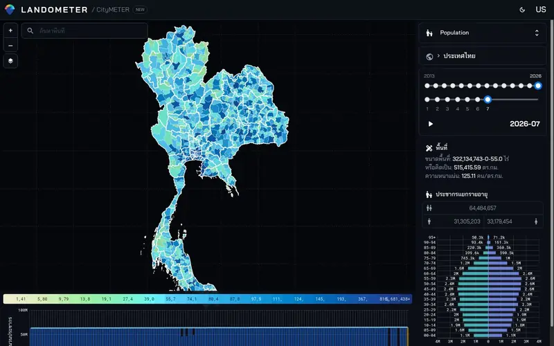
เปลี่ยนข้อมูลทะเบียนราษฎรให้เป็นแผนที่ประชากรตามอายุและเพศ ช่วยเปรียบเทียบพื้นที่และวางแผนบริการให้ตรงกับคนที่ต้องดูแล
สำรวจข้อมูล
เลือกดูตาม Land, Location หรือ Living หรือค้นชื่อข้อมูลและเรื่องที่สนใจ
อ่านที่ดินและสิ่งปลูกสร้าง เห็นภูมิทัศน์ตลาด และเข้าใจผู้คนกับบริการในพื้นที่ เพื่อตัดสินใจว่าควรสำรวจอะไรต่อ
รายการที่พบ: 43
ที่ดิน · อาคาร · โครงสร้างพื้นฐาน
แปลงข้อมูลอาคารให้เป็นภาพเมืองสามมิติ เห็นความหนาแน่น ความสูง และค่าประมาณพื้นที่ใช้สอยรวม เพื่อเลือกพื้นที่ศึกษาต่อ
อ่านสรุปแปลงข้อมูลอาคารให้เป็นภาพเมืองสามมิติ เห็นความหนาแน่น ความสูง และค่าประมาณพื้นที่ใช้สอยรวม เพื่อเลือกพื้นที่ศึกษาต่อ
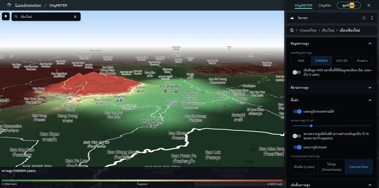
อ่านรูปทรงและระดับความสูงของภูมิประเทศในมุมมองสามมิติ เพื่อทำความเข้าใจพื้นที่และเตรียมคำถามก่อนสำรวจจริง
อ่านสรุปอ่านรูปทรงและระดับความสูงของภูมิประเทศในมุมมองสามมิติ เพื่อทำความเข้าใจพื้นที่และเตรียมคำถามก่อนสำรวจจริง
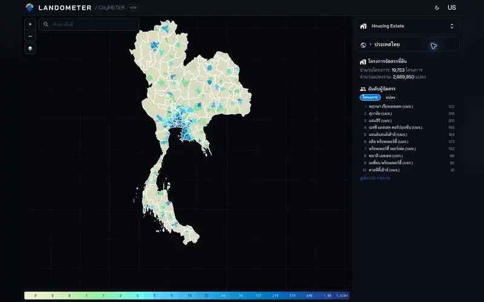
เปลี่ยนข้อมูลโครงการจัดสรรจากกรมที่ดินให้เป็นแผนที่ เปรียบเทียบการกระจุกตัว ประเภทที่อยู่อาศัย และผู้พัฒนาในแต่ละพื้นที่ได้ก่อนลงสำรวจ
อ่านสรุปเปลี่ยนข้อมูลโครงการจัดสรรจากกรมที่ดินให้เป็นแผนที่ เปรียบเทียบการกระจุกตัว ประเภทที่อยู่อาศัย และผู้พัฒนาในแต่ละพื้นที่ได้ก่อนลงสำรวจ
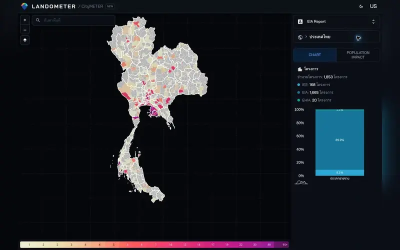
เปลี่ยนข้อมูลโครงการและรายงาน EIA ให้เป็นแผนที่ เห็นประวัติและประเภทโครงการรอบทำเลก่อนลงรายละเอียดในเอกสารต้นทาง
อ่านสรุปเปลี่ยนข้อมูลโครงการและรายงาน EIA ให้เป็นแผนที่ เห็นประวัติและประเภทโครงการรอบทำเลก่อนลงรายละเอียดในเอกสารต้นทาง
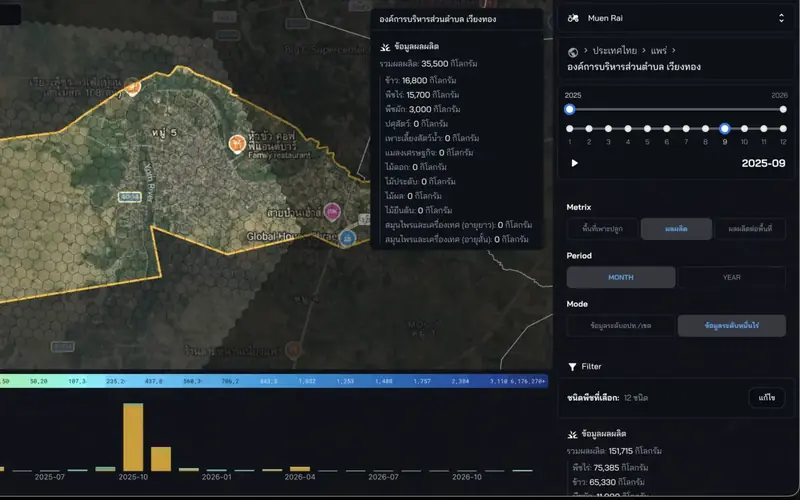
เปลี่ยนข้อมูลการเกษตรให้เป็นแผนที่ เห็นพื้นที่เพาะปลูก ผลผลิต และกิจกรรมเกษตรตามข้อมูลที่มี เพื่อเริ่มศึกษาแหล่งวัตถุดิบ
อ่านสรุปเปลี่ยนข้อมูลการเกษตรให้เป็นแผนที่ เห็นพื้นที่เพาะปลูก ผลผลิต และกิจกรรมเกษตรตามข้อมูลที่มี เพื่อเริ่มศึกษาแหล่งวัตถุดิบ
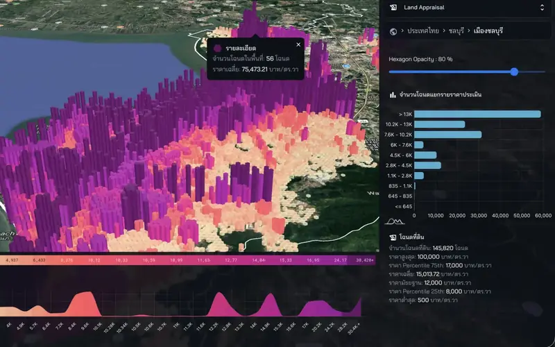
เปลี่ยนราคาประเมินที่ดินรายแปลงให้เป็นแผนที่ เห็นโครงสร้างราคาและเปรียบเทียบทำเลก่อนตรวจรายละเอียดแปลงที่สนใจ
อ่านสรุปเปลี่ยนราคาประเมินที่ดินรายแปลงให้เป็นแผนที่ เห็นโครงสร้างราคาและเปรียบเทียบทำเลก่อนตรวจรายละเอียดแปลงที่สนใจ
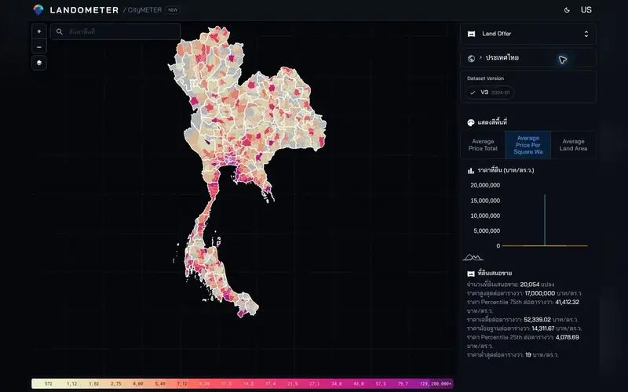
เปลี่ยนประกาศขายที่ดินให้เป็นแผนที่ เปรียบเทียบราคาเสนอขาย ขนาดแปลง และราคาประเมินก่อนเลือกที่ดินไปศึกษาต่อ
อ่านสรุปเปลี่ยนประกาศขายที่ดินให้เป็นแผนที่ เปรียบเทียบราคาเสนอขาย ขนาดแปลง และราคาประเมินก่อนเลือกที่ดินไปศึกษาต่อ
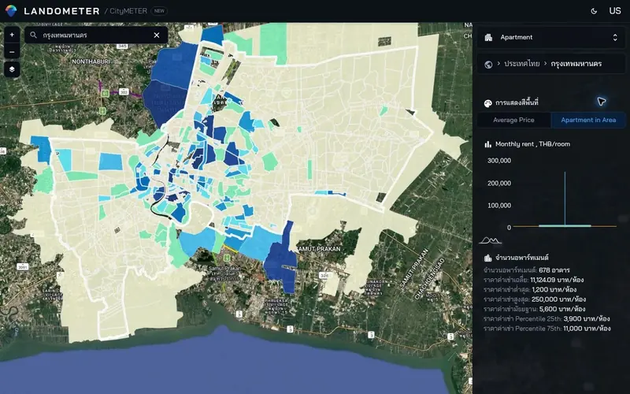
เปลี่ยนข้อมูลอพาร์ทเมนต์กระจัดกระจาย ให้เป็นภาพจำลองตลาดเช่าระดับย่านที่บอกโครงสร้างราคาและความหนาแน่นได้ทันที
อ่านสรุปเปลี่ยนข้อมูลอพาร์ทเมนต์กระจัดกระจาย ให้เป็นภาพจำลองตลาดเช่าระดับย่านที่บอกโครงสร้างราคาและความหนาแน่นได้ทันที
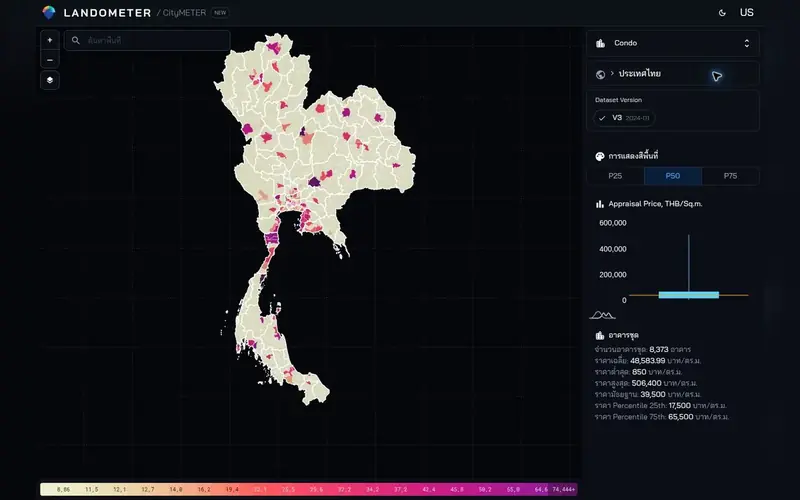
เปลี่ยนราคาประเมินคอนโดรายโครงการให้เป็นแผนที่ เห็นช่วงราคาและความแตกต่างระหว่างย่านก่อนเลือกโครงการไปศึกษาเพิ่มเติม
อ่านสรุปเปลี่ยนราคาประเมินคอนโดรายโครงการให้เป็นแผนที่ เห็นช่วงราคาและความแตกต่างระหว่างย่านก่อนเลือกโครงการไปศึกษาเพิ่มเติม
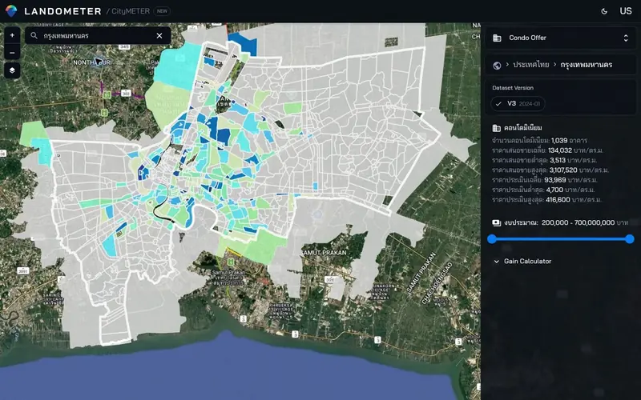
เปลี่ยนราคาประกาศขายคอนโด ให้เป็นแผนที่วิเคราะห์ที่เทียบกับราคาประเมินจากรัฐได้ในหน้าเดียว
อ่านสรุปเปลี่ยนราคาประกาศขายคอนโด ให้เป็นแผนที่วิเคราะห์ที่เทียบกับราคาประเมินจากรัฐได้ในหน้าเดียว
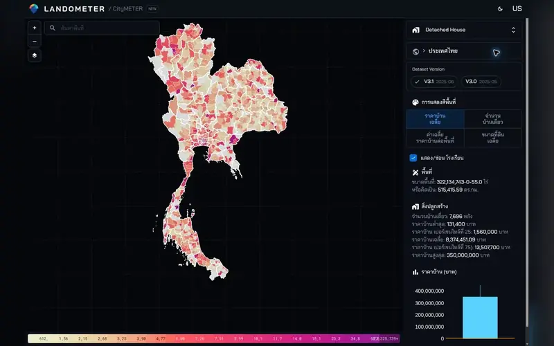
เปลี่ยนข้อมูลบ้านเดี่ยวในตลาด ให้เป็นแผนที่โครงสร้างราคาและขนาดที่ดินเชิงพื้นที่ ที่ช่วยให้เลือกทำเลบ้านที่ใช่ได้ง่ายขึ้น
อ่านสรุปเปลี่ยนข้อมูลบ้านเดี่ยวในตลาด ให้เป็นแผนที่โครงสร้างราคาและขนาดที่ดินเชิงพื้นที่ ที่ช่วยให้เลือกทำเลบ้านที่ใช่ได้ง่ายขึ้น
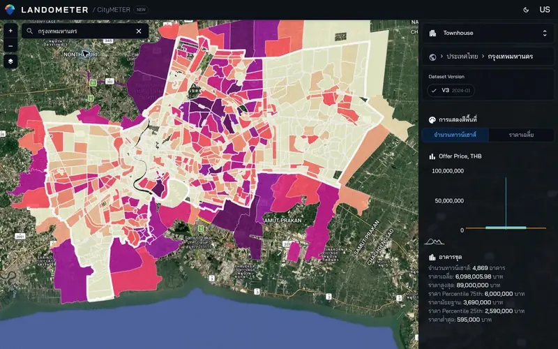
เปลี่ยนประกาศขายทาวน์เฮ้าส์ในตลาด ให้เป็นแผนที่โครงสร้างราคาและขนาดพื้นที่ ช่วยให้เลือกบ้านที่เหมาะกับงบและความต้องการ
อ่านสรุปเปลี่ยนประกาศขายทาวน์เฮ้าส์ในตลาด ให้เป็นแผนที่โครงสร้างราคาและขนาดพื้นที่ ช่วยให้เลือกบ้านที่เหมาะกับงบและความต้องการ
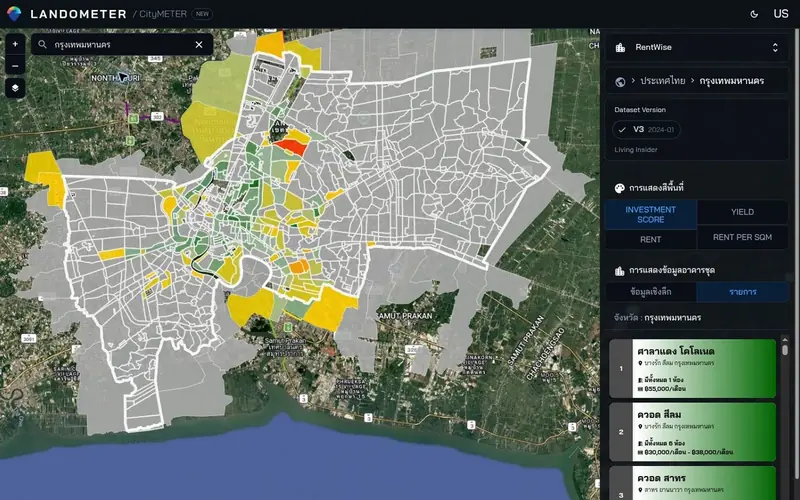
เปลี่ยนข้อมูลค่าเช่าคอนโดให้เป็นแผนที่ เปรียบเทียบราคาและตัวชี้วัดผลตอบแทนเบื้องต้นก่อนศึกษาห้องหรือโครงการที่สนใจ
อ่านสรุปเปลี่ยนข้อมูลค่าเช่าคอนโดให้เป็นแผนที่ เปรียบเทียบราคาและตัวชี้วัดผลตอบแทนเบื้องต้นก่อนศึกษาห้องหรือโครงการที่สนใจ
ภูมิทัศน์ตลาด · เครือข่ายธุรกิจ · การเข้าถึง
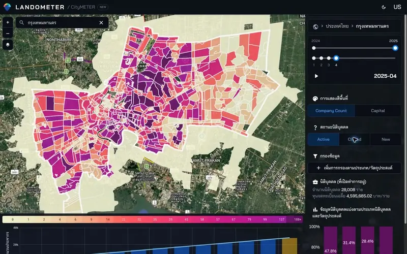
เปลี่ยนข้อมูลนิติบุคคลให้เป็นภาพรวมธุรกิจในแต่ละย่าน เห็นประเภทธุรกิจ สถานะทะเบียน และทุนจดทะเบียน เพื่อศึกษาคู่แข่ง คู่ค้า และตลาดที่ควรลงสำรวจ
อ่านสรุปเปลี่ยนข้อมูลนิติบุคคลให้เป็นภาพรวมธุรกิจในแต่ละย่าน เห็นประเภทธุรกิจ สถานะทะเบียน และทุนจดทะเบียน เพื่อศึกษาคู่แข่ง คู่ค้า และตลาดที่ควรลงสำรวจ
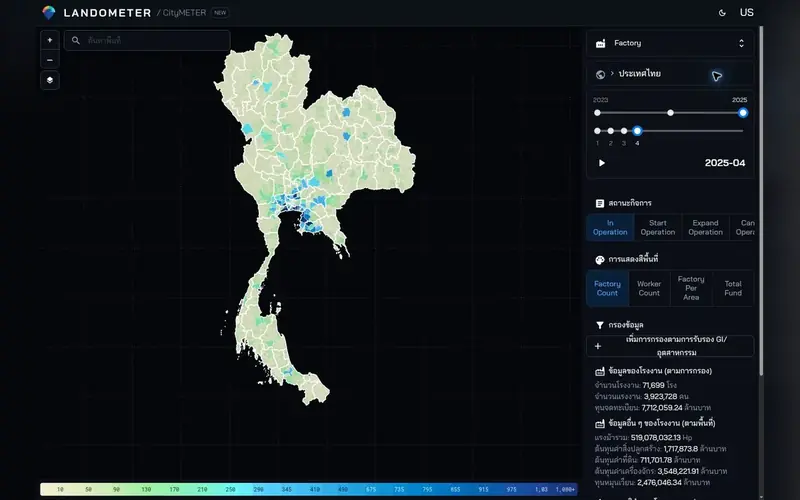
เปลี่ยนทะเบียนโรงงานทั่วประเทศ ให้เป็นแผนที่กิจกรรมอุตสาหกรรมเชิงพื้นที่ที่ช่วยสแกนข้อมูลแรงงานและการลงทุนระดับย่าน
อ่านสรุปเปลี่ยนทะเบียนโรงงานทั่วประเทศ ให้เป็นแผนที่กิจกรรมอุตสาหกรรมเชิงพื้นที่ที่ช่วยสแกนข้อมูลแรงงานและการลงทุนระดับย่าน
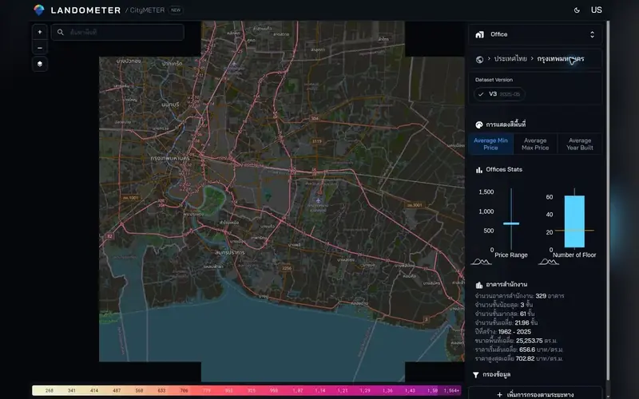
รวมข้อมูลอาคารสำนักงานในกรุงเทพฯ ให้เห็นราคาเสนอเช่าและบริบททำเลในแผนที่เดียว เพื่อเลือกอาคารที่จะศึกษารายละเอียดต่อ
อ่านสรุปรวมข้อมูลอาคารสำนักงานในกรุงเทพฯ ให้เห็นราคาเสนอเช่าและบริบททำเลในแผนที่เดียว เพื่อเลือกอาคารที่จะศึกษารายละเอียดต่อ
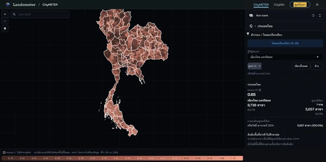
มองเห็นเครือข่ายสาขาและสำนักงานผู้ให้กู้ Non-bank เพื่อวางกลยุทธ์ตลาดและสำรวจพื้นที่ให้บริการต่ออย่างมีบริบท
อ่านสรุปมองเห็นเครือข่ายสาขาและสำนักงานผู้ให้กู้ Non-bank เพื่อวางกลยุทธ์ตลาดและสำรวจพื้นที่ให้บริการต่ออย่างมีบริบท
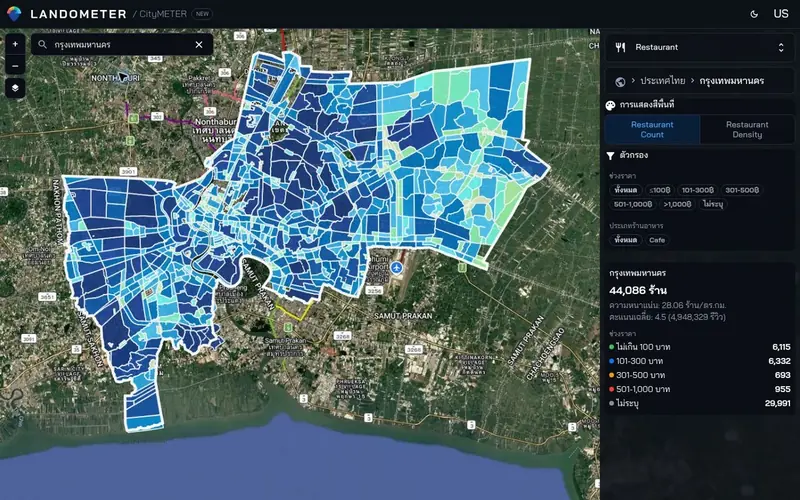
เปลี่ยนพิกัดร้านอาหารให้เป็นภาพรวมระดับย่าน เห็นประเภทร้าน คะแนนรีวิว และช่วงราคาก่อนเลือกทำเลไปศึกษาเพิ่มเติม
อ่านสรุปเปลี่ยนพิกัดร้านอาหารให้เป็นภาพรวมระดับย่าน เห็นประเภทร้าน คะแนนรีวิว และช่วงราคาก่อนเลือกทำเลไปศึกษาเพิ่มเติม
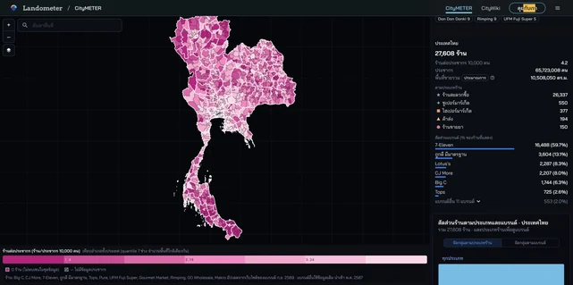
เห็นเครือข่ายร้านค้าปลีกและค้าส่งในพื้นที่เดียวกัน เพื่อวางกลยุทธ์ตลาดและเลือกย่านที่ควรลงสำรวจต่อ
อ่านสรุปเห็นเครือข่ายร้านค้าปลีกและค้าส่งในพื้นที่เดียวกัน เพื่อวางกลยุทธ์ตลาดและเลือกย่านที่ควรลงสำรวจต่อ
เห็นศูนย์การค้า ตลาด และพื้นที่ค้าปลีกในบริบททำเลเดียวกัน เพื่อวางกลยุทธ์ตลาดและเลือกสถานที่ศึกษาต่อ
อ่านสรุปเห็นศูนย์การค้า ตลาด และพื้นที่ค้าปลีกในบริบททำเลเดียวกัน เพื่อวางกลยุทธ์ตลาดและเลือกสถานที่ศึกษาต่อ
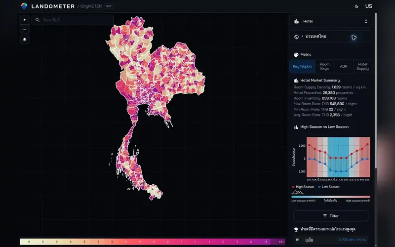
เปลี่ยนข้อมูลโรงแรมและที่พักให้เป็นแผนที่ เห็นจำนวนห้องพัก การกระจุกตัว และระดับราคาที่มี ก่อนศึกษาทำเลที่พึ่งพานักเดินทาง
อ่านสรุปเปลี่ยนข้อมูลโรงแรมและที่พักให้เป็นแผนที่ เห็นจำนวนห้องพัก การกระจุกตัว และระดับราคาที่มี ก่อนศึกษาทำเลที่พึ่งพานักเดินทาง
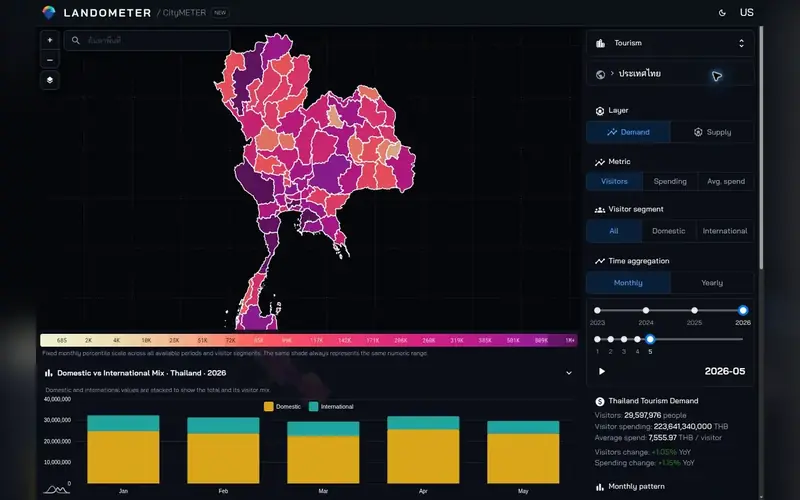
เปลี่ยนข้อมูลการท่องเที่ยวจากหลายหน่วยงานให้เป็นแผนที่ เห็นแนวโน้มนักท่องเที่ยว การใช้จ่าย และแหล่งท่องเที่ยวเพื่อเลือกพื้นที่ศึกษาหรือพัฒนาต่อ
อ่านสรุปเปลี่ยนข้อมูลการท่องเที่ยวจากหลายหน่วยงานให้เป็นแผนที่ เห็นแนวโน้มนักท่องเที่ยว การใช้จ่าย และแหล่งท่องเที่ยวเพื่อเลือกพื้นที่ศึกษาหรือพัฒนาต่อ

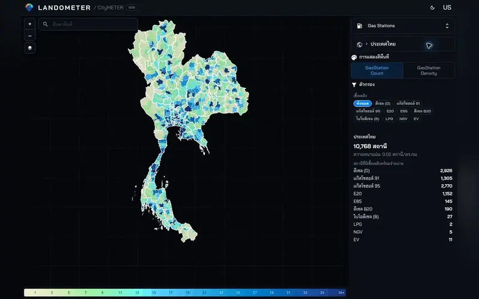
เห็นการกระจายตัวและสัดส่วนจำนวนสถานีบริการแต่ละแบรนด์ เพื่อศึกษาภูมิทัศน์ตลาดและเลือกพื้นที่ลงสำรวจ
อ่านสรุปเห็นการกระจายตัวและสัดส่วนจำนวนสถานีบริการแต่ละแบรนด์ เพื่อศึกษาภูมิทัศน์ตลาดและเลือกพื้นที่ลงสำรวจ
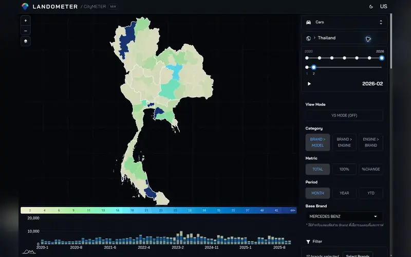
เปลี่ยนข้อมูลรถจดทะเบียนครั้งแรกให้เป็นแผนที่รายจังหวัด เห็นสัดส่วนแบรนด์ ประเภทรถ และแนวโน้ม เพื่อวางแผนตลาดและเครือข่ายบริการให้ตรงพื้นที่
อ่านสรุปเปลี่ยนข้อมูลรถจดทะเบียนครั้งแรกให้เป็นแผนที่รายจังหวัด เห็นสัดส่วนแบรนด์ ประเภทรถ และแนวโน้ม เพื่อวางแผนตลาดและเครือข่ายบริการให้ตรงพื้นที่
เปลี่ยนข้อมูลเส้นถนนบนแผนที่ ให้เป็นโปรไฟล์โครงสร้างของพื้นที่ ที่ช่วยให้เห็นรูปแบบการเชื่อมต่อของเมืองและประเมินศักยภาพทำเลได้ง่ายขึ้น
อ่านสรุปเปลี่ยนข้อมูลเส้นถนนบนแผนที่ ให้เป็นโปรไฟล์โครงสร้างของพื้นที่ ที่ช่วยให้เห็นรูปแบบการเชื่อมต่อของเมืองและประเมินศักยภาพทำเลได้ง่ายขึ้น
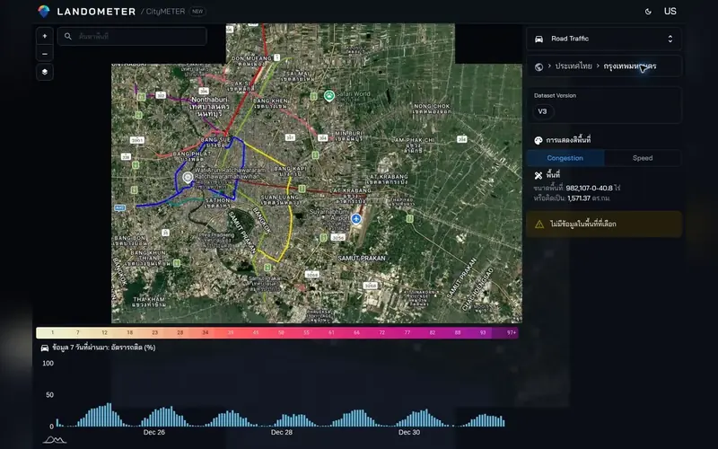
เห็นความเร็วและความติดขัดในช่วงที่มีข้อมูล เพื่อเข้าใจการเข้าถึงทำเลก่อนวางแผนหน้าร้าน การให้บริการ และการลงสำรวจตลาด
อ่านสรุปเห็นความเร็วและความติดขัดในช่วงที่มีข้อมูล เพื่อเข้าใจการเข้าถึงทำเลก่อนวางแผนหน้าร้าน การให้บริการ และการลงสำรวจตลาด
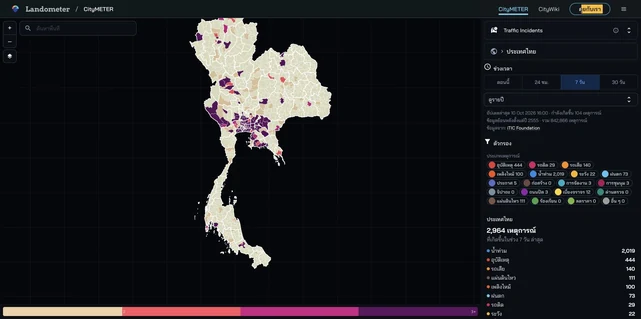
เลือกพื้นที่และช่วงเวลา แล้วเห็นว่ามีรายงานเรื่องใดบ้าง เพื่อเลือกหลักฐานที่ควรเปิดดูต่อและวางแผนงานในพื้นที่ได้ดีขึ้น
อ่านสรุปเลือกพื้นที่และช่วงเวลา แล้วเห็นว่ามีรายงานเรื่องใดบ้าง เพื่อเลือกหลักฐานที่ควรเปิดดูต่อและวางแผนงานในพื้นที่ได้ดีขึ้น
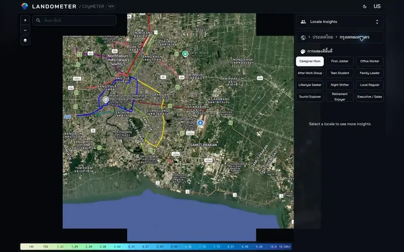
รวมข้อมูลสำคัญของแต่ละพื้นที่ ให้เป็นแผนที่โปรไฟล์ทำเลในหน้าเดียว ที่ช่วยให้เห็นจุดเด่น จุดด้อย และภาพรวมของแต่ละย่านได้ชัดเจนขึ้น
อ่านสรุปรวมข้อมูลสำคัญของแต่ละพื้นที่ ให้เป็นแผนที่โปรไฟล์ทำเลในหน้าเดียว ที่ช่วยให้เห็นจุดเด่น จุดด้อย และภาพรวมของแต่ละย่านได้ชัดเจนขึ้น
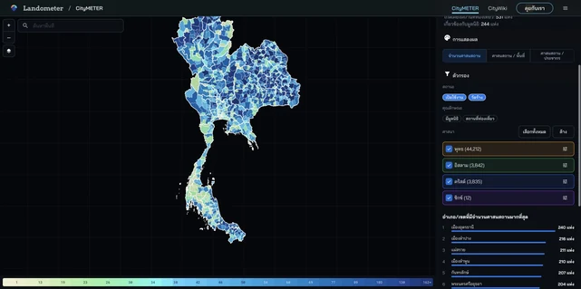
รู้จักศาสนสถานในพื้นที่ผ่านแผนที่ เพื่อเริ่มทำความเข้าใจบริบทชุมชนและเตรียมการพูดคุยในพื้นที่อย่างรอบด้าน
อ่านสรุปรู้จักศาสนสถานในพื้นที่ผ่านแผนที่ เพื่อเริ่มทำความเข้าใจบริบทชุมชนและเตรียมการพูดคุยในพื้นที่อย่างรอบด้าน
ผู้คน · บริการ · ความเป็นอยู่
เปลี่ยนข้อมูลทะเบียนราษฎรให้เป็นแผนที่ประชากรตามอายุและเพศ ช่วยเปรียบเทียบพื้นที่และวางแผนบริการให้ตรงกับคนที่ต้องดูแล
อ่านสรุปเปลี่ยนข้อมูลทะเบียนราษฎรให้เป็นแผนที่ประชากรตามอายุและเพศ ช่วยเปรียบเทียบพื้นที่และวางแผนบริการให้ตรงกับคนที่ต้องดูแล
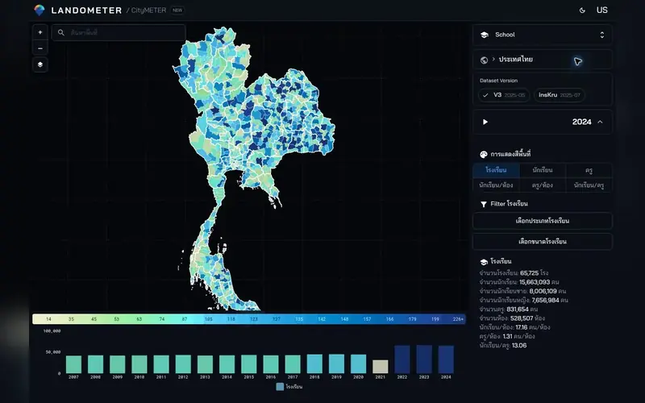
เปลี่ยนข้อมูลสถานศึกษา ให้เป็นแผนที่วิเคราะห์การกระจายตัวของโรงเรียน ที่ช่วยให้เห็นความหนาแน่น ระดับชั้น และประเภทของสถานศึกษาในแต่ละพื้นที่ได้ชัดเจนขึ้น
อ่านสรุปเปลี่ยนข้อมูลสถานศึกษา ให้เป็นแผนที่วิเคราะห์การกระจายตัวของโรงเรียน ที่ช่วยให้เห็นความหนาแน่น ระดับชั้น และประเภทของสถานศึกษาในแต่ละพื้นที่ได้ชัดเจนขึ้น
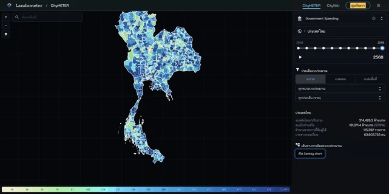
เปลี่ยนข้อมูลงบประมาณและการเบิกจ่ายให้เป็นภาพเชิงพื้นที่ เพื่อเห็นว่าเงินถูกจัดสรรและเบิกจ่ายอย่างไร ก่อนติดตามโครงการต่อ
อ่านสรุปเปลี่ยนข้อมูลงบประมาณและการเบิกจ่ายให้เป็นภาพเชิงพื้นที่ เพื่อเห็นว่าเงินถูกจัดสรรและเบิกจ่ายอย่างไร ก่อนติดตามโครงการต่อ
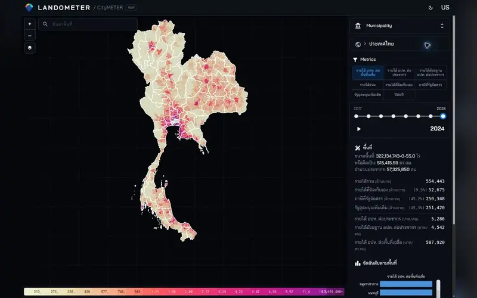
เปลี่ยนข้อมูลรายได้องค์กรปกครองส่วนท้องถิ่นให้เป็นแผนที่ เปรียบเทียบพื้นที่และแนวโน้มรายปีเพื่อเตรียมแผนบริการและงบประมาณ
อ่านสรุปเปลี่ยนข้อมูลรายได้องค์กรปกครองส่วนท้องถิ่นให้เป็นแผนที่ เปรียบเทียบพื้นที่และแนวโน้มรายปีเพื่อเตรียมแผนบริการและงบประมาณ
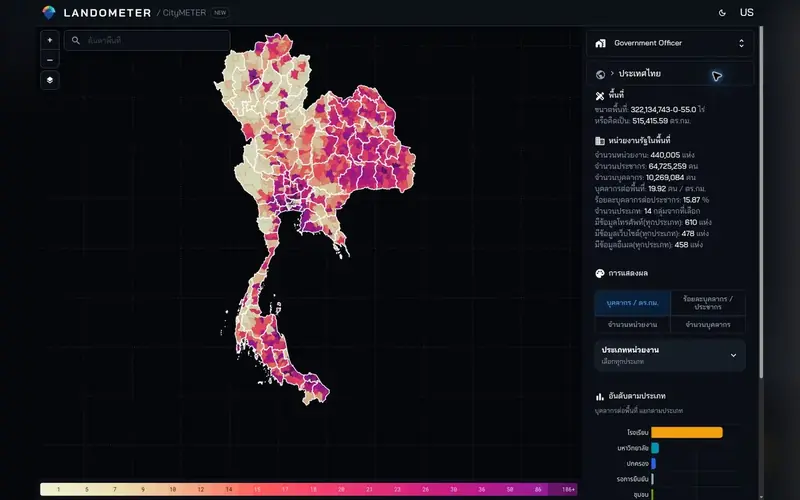
ค้นหาหน่วยงานและจุดบริการในพื้นที่ พร้อมอ่านบริบทกำลังคนจากสถิติของหน่วยงาน เพื่อเตรียมการประสานงานและวางแผนบริการ
อ่านสรุปค้นหาหน่วยงานและจุดบริการในพื้นที่ พร้อมอ่านบริบทกำลังคนจากสถิติของหน่วยงาน เพื่อเตรียมการประสานงานและวางแผนบริการ
เปลี่ยนข้อมูลน้ำท่วมย้อนหลังให้เป็นแผนที่ เห็นพื้นที่ที่เคยตรวจพบน้ำท่วมและการเกิดซ้ำในแต่ละปี ก่อนศึกษาทำเลต่อ
อ่านสรุปเปลี่ยนข้อมูลน้ำท่วมย้อนหลังให้เป็นแผนที่ เห็นพื้นที่ที่เคยตรวจพบน้ำท่วมและการเกิดซ้ำในแต่ละปี ก่อนศึกษาทำเลต่อ
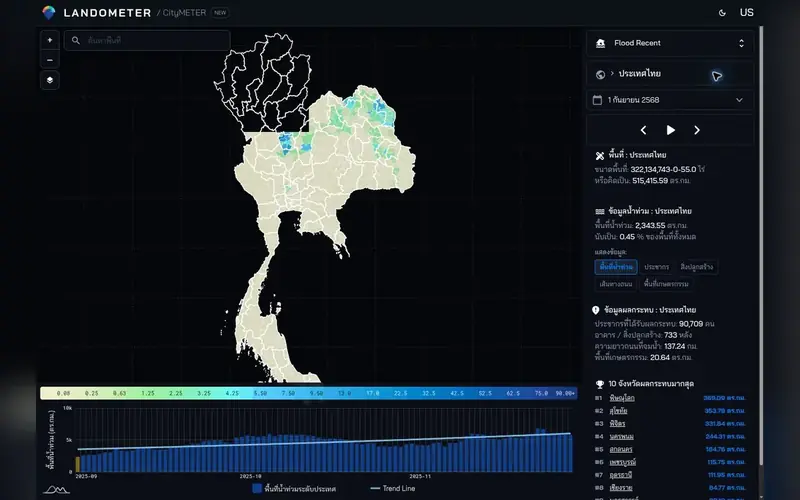
เปลี่ยนพื้นที่น้ำท่วมที่ดาวเทียมตรวจพบให้เป็นแผนที่ อ่านวันที่ของภาพและบริบทลุ่มน้ำ เพื่อทบทวนเหตุการณ์และวางประเด็นศึกษาต่อ
อ่านสรุปเปลี่ยนพื้นที่น้ำท่วมที่ดาวเทียมตรวจพบให้เป็นแผนที่ อ่านวันที่ของภาพและบริบทลุ่มน้ำ เพื่อทบทวนเหตุการณ์และวางประเด็นศึกษาต่อ
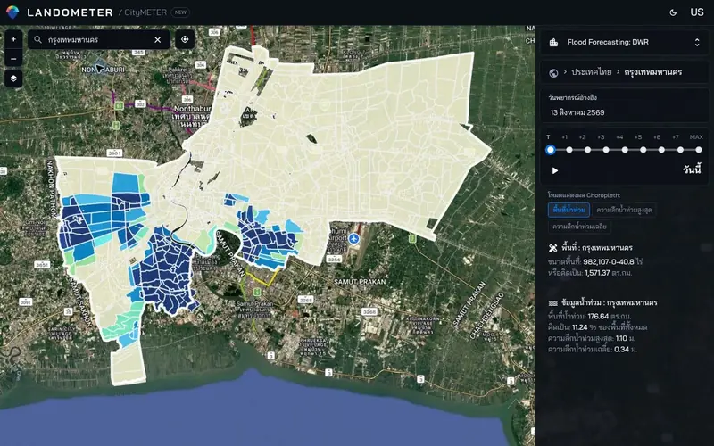
เห็นความลึกน้ำท่วมที่แบบจำลองคาดการณ์ในพื้นที่และช่วงเวลาที่เลือก เพื่อเตรียมคำถามและติดตามสถานการณ์ต่อ
อ่านสรุปเห็นความลึกน้ำท่วมที่แบบจำลองคาดการณ์ในพื้นที่และช่วงเวลาที่เลือก เพื่อเตรียมคำถามและติดตามสถานการณ์ต่อ
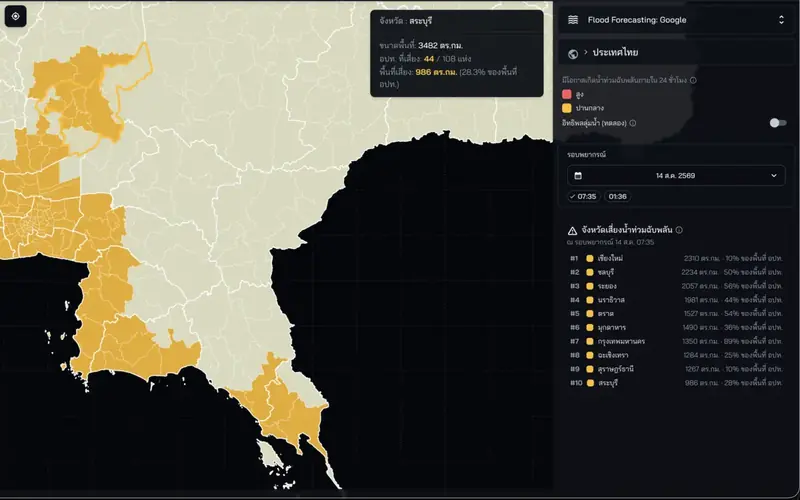
นำข้อมูลคาดการณ์น้ำท่วมฉับพลันมาอ่านในบริบทพื้นที่ เพื่อเตรียมตรวจสถานการณ์และติดตามประกาศเตือนภัยที่เกี่ยวข้อง
อ่านสรุปนำข้อมูลคาดการณ์น้ำท่วมฉับพลันมาอ่านในบริบทพื้นที่ เพื่อเตรียมตรวจสถานการณ์และติดตามประกาศเตือนภัยที่เกี่ยวข้อง
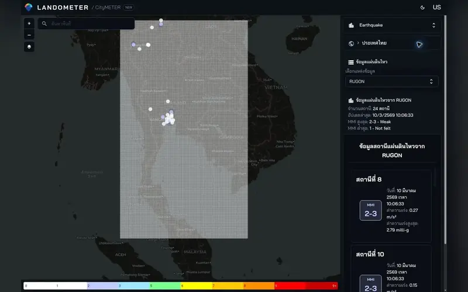
เห็นค่าการสั่นที่สถานีรายงาน รู้ว่าข้อมูลแทนช่วงเวลาใด และเลือกตรวจพื้นที่ต่อได้อย่างมีหลักฐาน
อ่านสรุปเห็นค่าการสั่นที่สถานีรายงาน รู้ว่าข้อมูลแทนช่วงเวลาใด และเลือกตรวจพื้นที่ต่อได้อย่างมีหลักฐาน
เปลี่ยนจุดความร้อนจากดาวเทียมให้เป็นแผนที่ที่อ่านร่วมกับขอบเขตพื้นที่และเวลาตรวจพบ เพื่อเลือกจุดติดตามและตรวจสอบต่อ
อ่านสรุปเปลี่ยนจุดความร้อนจากดาวเทียมให้เป็นแผนที่ที่อ่านร่วมกับขอบเขตพื้นที่และเวลาตรวจพบ เพื่อเลือกจุดติดตามและตรวจสอบต่อ
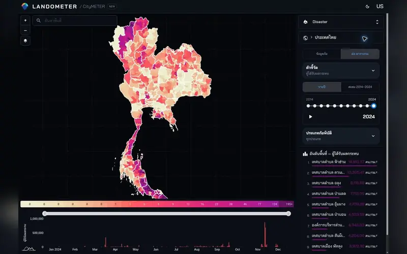
เปลี่ยนสถิติสาธารณภัยย้อนหลังระดับหมู่บ้าน ให้เป็นแผนที่วิเคราะห์พื้นที่ที่เคยได้รับผลกระทบ เพื่อการวางแผนป้องกันอย่างมีหลักฐานรองรับ
อ่านสรุปเปลี่ยนสถิติสาธารณภัยย้อนหลังระดับหมู่บ้าน ให้เป็นแผนที่วิเคราะห์พื้นที่ที่เคยได้รับผลกระทบ เพื่อการวางแผนป้องกันอย่างมีหลักฐานรองรับ
รวมรายงานน้ำท่วมหาดใหญ่ 24–27 พฤศจิกายน 2568 ไว้บนแผนที่ เพื่อย้อนดูเหตุการณ์และบทเรียนการช่วยเหลือในแต่ละพื้นที่
อ่านสรุปรวมรายงานน้ำท่วมหาดใหญ่ 24–27 พฤศจิกายน 2568 ไว้บนแผนที่ เพื่อย้อนดูเหตุการณ์และบทเรียนการช่วยเหลือในแต่ละพื้นที่
รวมสถานะจากรายงานตรวจอาคารหลังแผ่นดินไหวไว้บนแผนที่ เพื่อค้นอาคารและติดตามรายละเอียดการตรวจจากผู้รับผิดชอบ
อ่านสรุปรวมสถานะจากรายงานตรวจอาคารหลังแผ่นดินไหวไว้บนแผนที่ เพื่อค้นอาคารและติดตามรายละเอียดการตรวจจากผู้รับผิดชอบ
ลองใช้คำที่สั้นลง หรือเปิดดูทุกหมวด
ดูต่อบนมือถือ
สแกน QR เพื่อเปิดบนมือถือ เก็บลิงก์ไว้ดูเอง หรือส่งให้เพื่อนที่กำลังเลือกบ้าน ทำเลธุรกิจ หรือพื้นที่ลงทุน
มีพื้นที่หรือโจทย์อยู่แล้ว?
ส่งชื่อพื้นที่และคำถามมา ทีมจะช่วยเลือกข้อมูลให้ตรงกับเรื่องที่คุณกำลังตัดสินใจ